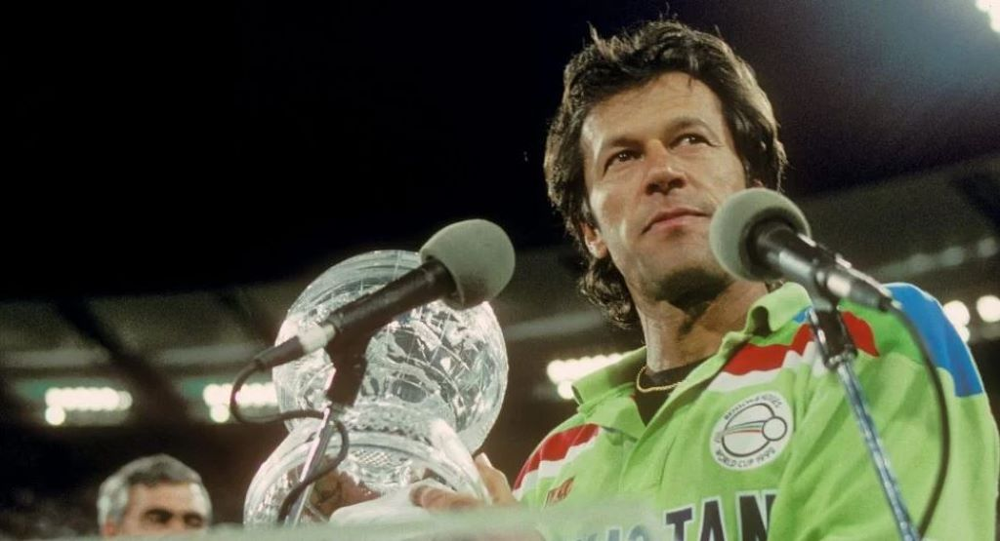
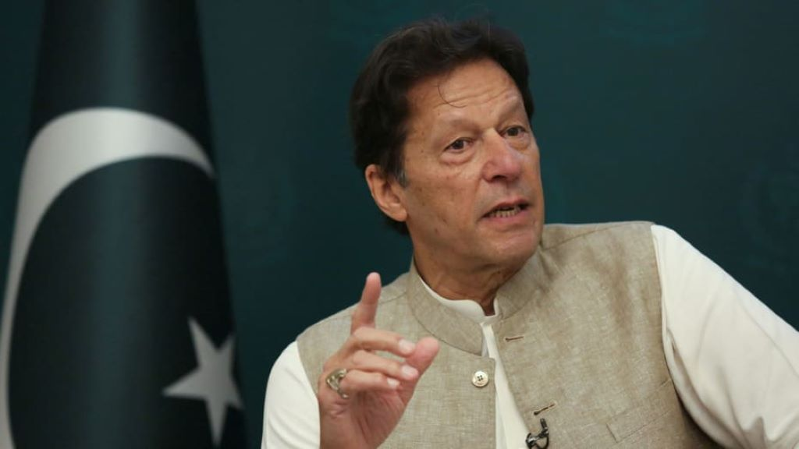

Imran Khan
Cricket Icon, Political Architect, The symbol of change in Pakistan
Imran Khan in 2016 in Bani Gala, Pakistan
Here's a timeline of Imran Khan's life:
- 1952 - Born in Lahore, Pakistan
Imran Khan was born on October 5, 1952, in Lahore. From his early years, Khan displayed an affinity for sports, foreshadowing the athletic prowess that would later define his life.
- 1971 - Makes his debut in international cricket
Imran Khan's journey to international recognition began in 1971 when he made his debut for the Pakistan national cricket team. His exceptional cricketing skills and leadership qualities quickly marked him as a standout player.
- 1972 - Enrolls at Oxford University
After making a name for himself in the world of cricket, Imran Khan pursued higher education at Oxford University. In 1972, he enrolled in the prestigious institution, showcasing a commitment to academic pursuits alongside his flourishing cricket career.
- 1975 - Graduates from Oxford University
Imran Khan completed his studies at Oxford University in 1975, graduating with a degree in Economics. His successful academic journey at one of the world's foremost institutions further enriched his intellectual capabilities that later also helped him as a politician and statesman.
- 1982 - Leads Pakistan for the first time in World Cup
Imran Khan assumed the captaincy of the Pakistan cricket team for the first time in the 1982 Cricket World Cup. This marked a watershed moment in his career as he led the team with determination and strategic acumen. Under his captaincy, Pakistan reached the semifinals, showcasing Khan's emerging leadership qualities on the international stage.
- 1992 - Inaugural Cricket World Cup Triumph
Imran Khan giving speech after winning Cricket World Cup in 1992
Imran Khan achieved a historic milestone in 1992 by leading the Pakistan cricket team to their first-ever Cricket World Cup victory. The tournament, held in Australia and New Zealand, witnessed Khan's exceptional leadership as he guided his team to overcome challenges and emerge victorious in the final against England. This triumph not only brought unparalleled joy to the cricket-loving nation of Pakistan but also solidified Imran Khan's position as an iconic captain, marking a watershed moment in the history of Pakistani cricket.
- 1994 - Establishes Shaukat Khanum Memorial Cancer Hospital
Imran Khan's commitment to public service extended beyond the realms of sports and politics. In 1994, he undertook a monumental endeavor by establishing the Shaukat Khanum Memorial Cancer Hospital and Research Centre in Lahore, Pakistan. Named in memory of his mother, Shaukat Khanum, who succumbed to cancer, the hospital aimed to provide state-of-the-art cancer treatment to all, regardless of their financial means.
- 1996 - Establishes the Pakistan Tehreek-e-Insaf (PTI) party
Imran Khan's entry into politics marked a new chapter in his life. In 1996, he founded the Pakistan Tehreek-e-Insaf (PTI) party with the aim of creating a more just and equitable society. This move showcased Khan's commitment to serving his nation beyond the cricket field.
- 2002 - First foray into politics as a Member of Parliament
Imran Khan transitioned from cricket to politics by winning a seat in the National Assembly of Pakistan in 2002. This marked the beginning of his political career, where he aimed to bring about positive change and address the challenges facing the country.
- 2013 - Leads the PTI in the general elections
Imran Khan's political ambitions grew as he led the PTI in the 2013 general elections. Although the party did not secure a majority, Khan's influence continued to rise, and the PTI became a formidable force in Pakistani politics.
- 2018 - Elected as the 22nd Prime Minister of Pakistan
Imran Khan as Prime Minister of Pakistan in 2019
In a historic turn of events, Imran Khan was elected as the 22nd Prime Minister of Pakistan in August 2018. His victory reflected the trust placed in him by the people, and it marked a significant shift in the political landscape of the country.
- 2020 - Challenges and Criticisms
Imran Khan's tenure as Prime Minister was not without its challenges and criticisms. His handling of economic issues, governance, and various policy decisions faced scrutiny. The complexities of steering a diverse and populous country like Pakistan were evident, and critics raised concerns about the effectiveness of some government initiatives.
- 2023 - Conclusion of Prime Ministership
Imran Khan's tenure as the Prime Minister of Pakistan reached a turning point in 2023 when he stepped down from office. His decision to relinquish the prime ministership marked a significant chapter in Pakistan's political landscape. The circumstances surrounding his departure were varied, including political developments, challenges faced by the government, and debates within the political arena.
Looking ahead, the future of Imran Khan's influence on Pakistani politics remains uncertain. The dynamics of governance and the evolving needs of the nation will continue to shape his legacy. Whether through continued political involvement or through the lasting impact of his policy initiatives, Imran Khan's contributions will undoubtedly leave an indelible mark on the course of Pakistan's history.
In conclusion, Imran Khan's life has been a multifaceted journey marked by success, challenges, and a commitment to service. From the cricket field to the political arena, he has left an enduring legacy, and his story continues to evolve, shaping the narrative of Pakistan's past, present, and future.
If you have time, you should read more about him being on his Wikipedia entry.